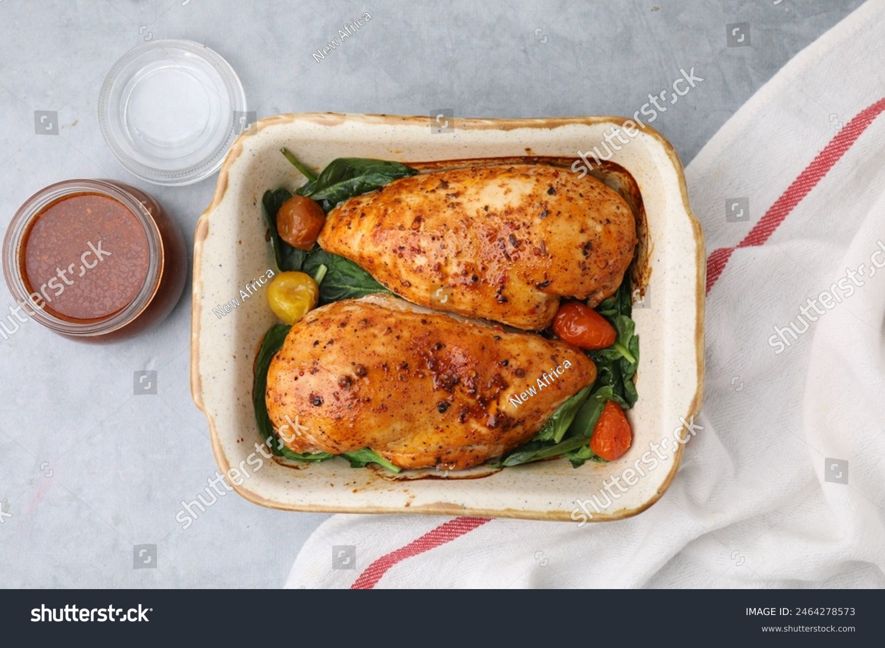

Oven Baked Chicken Breast

Description
This oven baked chicken breast recipe is simple, healthy, and results in juicy, flavorful chicken every time.
With just a handful of pantry staples and minimal prep, you can have a delicious main course ready in under 30 minutes.
The combination of olive oil and spices ensures the chicken stays moist and tender, while baking in the oven makes
cleanup a breeze. Perfect for a quick weeknight dinner or meal prep, this recipe is sure to become a staple in your kitchen.
Ingredients
- 2 boneless, skinless chicken breasts
- 2 tablespoons olive oil
- 1 teaspoon garlic powder
- 1 teaspoon paprika
- 1/2 teaspoon salt
- 1/2 teaspoon black pepper
- Fresh herbs (optional, for garnish)
Steps
- Preheat your oven to 400°F (200°C).
- Place the chicken breasts on a baking sheet lined with parchment paper or aluminum foil.
- Drizzle olive oil over the chicken breasts, ensuring they are well coated.
- In a small bowl, mix together the garlic powder, paprika, salt, and black pepper.
- Sprinkle the seasoning mixture evenly over both sides of the chicken breasts.
- Bake in the preheated oven for 20-25 minutes, or until the internal temperature reaches 165°F (75°C).
- Remove from the oven and let the chicken rest for 5 minutes before slicing.
- Garnish with fresh herbs if desired and serve.
Back to home page